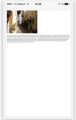

Viewport
El viewport es el area visible para el usuario de una pagina web.
Varia con el dispositivo en el que se visualize la pagina web.
Surgio como una manera de arreglar las paginas web, previamente adaptadas unicamente para pc
La imagen es un ejemplo de una pagina sin el meta tag viewport
width=device-width
Insertado dentro del meta tag, permite el ancho de la pagina a variar dependiendo de el dispositivo en el cual se visualize.
initial-scale=1.0
Inicializa el nivel inicial de zoom cuando la pagina es cargada por primera ves.